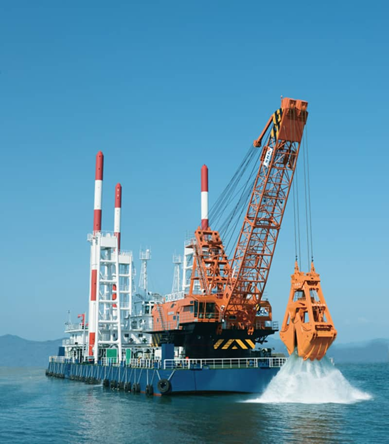
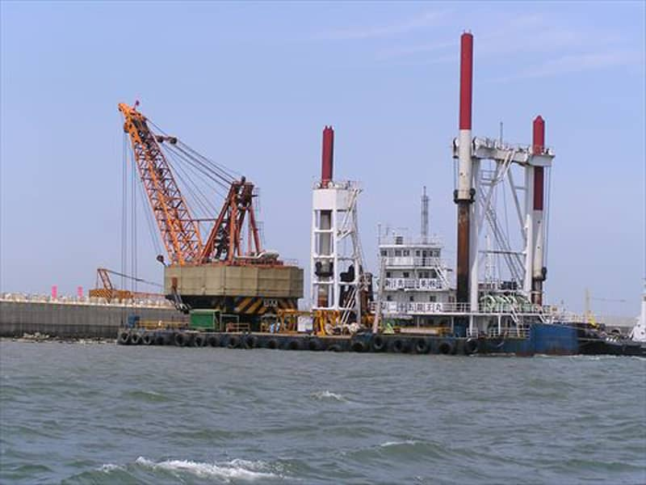
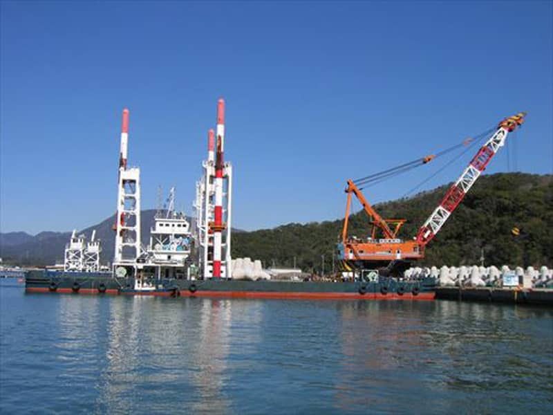
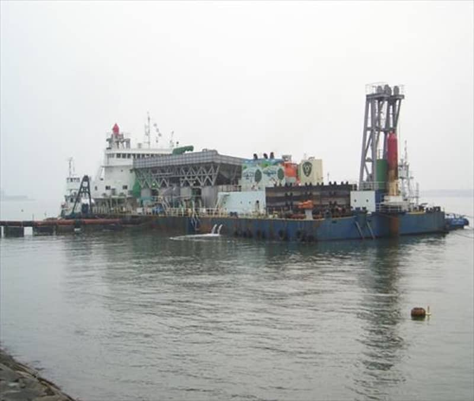
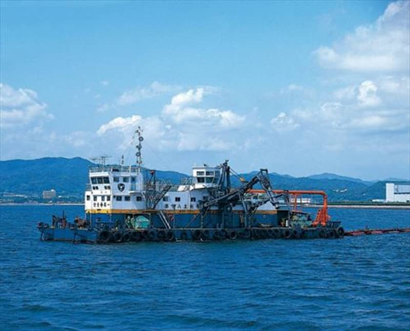
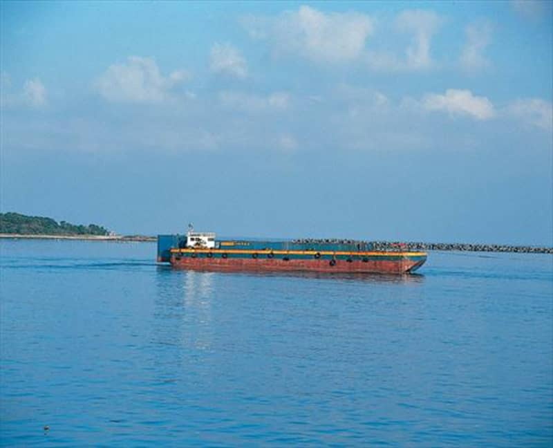
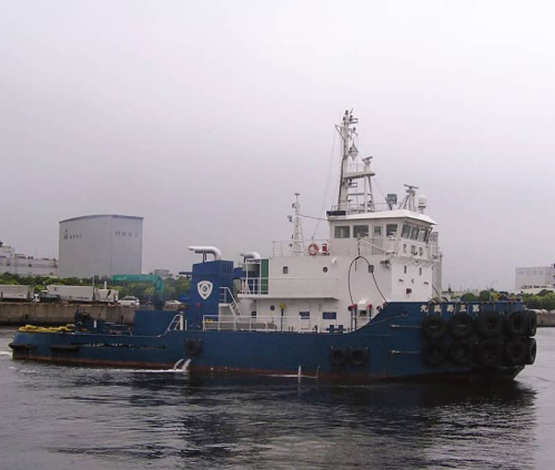
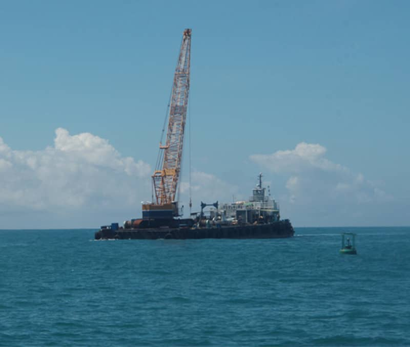

グラブ式浚渫船 第十五龍正丸
総屯数／2,160t
船質／鋼
船体寸法／長：60.0 幅：24.0 深：5.0 スパッド長：40.0
浚渫／グラブ容量：30m³ 硬土用：10m³ 深度：60.0m
浚渫量／1047m³/h
全旋回クレーン／吊能力：80t
竣工年月日／平成27年3月26日
【施工の特徴】
・音響測深ソナー（NETIS登録）及びGPSを装備した最新浚渫管理システムを採用。
・迅速な横移動を可能とした「ポンプジェット式スラスタ」を船首、船尾に装備
・主機および補機に船用エンジンを予備も含めて各2基搭載
・油圧ユニットを4基搭載で操船スピードアップ
【環境対策】
・環境対応型エンジンを採用
・環境に優しい生分解性オイルを採用
・船内の廃棄物に対応する油水分離装置、汚水処理装置、生ごみ処理機を配備
・クレーンの騒音対策として超低騒音マフラ（84dB対応型）を装備
・太陽光発電パネルによる電力の供給
【安全設備】
・不可視部分を監視するモニターカメラ13台設置
・土運船等接舷時の事故防止対策装置（昇降式チェーンガイドローラー）の装備
【クレーン部主要諸元】
●浚渫仕様
直巻能力／110ton
グラブバケット／軟土盤用：30ｍ3 / 66ton、硬土盤用：10ｍ3 / 90ton、平底幅広型：30ｍ3 / 60ton
巻上速度／0～60ｍ/min
巻下速度／0～80ｍ/min
浚渫深度／水面下60ｍ（全揚程66ｍ）
水平掘装置／ディスクブレーキ制御（1cm制御
浚渫施工管理装置／シービジョン・ナビゲータ
超音波測深装置／シービジョン（SV-502C）
●起重機仕様
主巻・最大定格総荷重／80ton×24.1ton
作業半径／15.7～30.4ｍ（ジブ角度30°～70°）
最大揚程／水面下26m
補巻／9.4ton
●一般主要仕様
ジブ長さ／28ｍ
原動機／新潟原動機（株）：6L28HLX 2206kW（3000ps）/750rpm
※IMO Nox二次規制対応
動力伝達方法／巻上・巻下/トルクコンバータ 旋回・起伏/油圧
旋回速度／0～1.2rpm
起伏ロープ速度／0～72ｍ/min
ワイヤーロープ／起伏：35.5mm、支持：55mm、開閉：52mm、補巻：22mm
【船体部主要諸元】
●主要寸法
長さ／60.0ｍ
幅／24.0m
深さ／5.0m
●タンク容量
バラストタンク／船尾部 278m3×2か所・185m3×2か所
清水タンク／179m3×2か所
冷却水タンク／119m3×2か所
燃料タンク／重油 248m3×1か所
●電力設備
主発電機／500KVA×220V×60Hz 2台
補助発電機／130KVA×220V×60Hz 2台
●スラスター装置
ポンプジェット SPJ57N2台／302kW（411ps）/2616rpm
●甲板機械
スパッド装置／固定式吊り下げ型 、1300×40m 3基
操船ウィンチ（油圧）／チェーン：40/20ton×10/20m/min 4台、ワイヤー：36/16ton×12/24m/min 4台
雑用ウィンチ（油圧）／7.5/3.75ton×10/20m/min 2台
●その他装置
油水分離装置／05.m3/h 1台
汚水処理装置／32人用
生ごみ処理機／8人用
太陽光システム／3ｋW
モニターカメラ装置／回航用：クレーン前部・後部各1台、クレーン関係：4台、操船ウィンチ：4台、
スパット：3台
閉じる
グラブ式浚渫船 第三十六龍王丸
総屯数／2,881t
船質／鋼
船体寸法／長：65.0 幅：25.0 深：6.0 スパッド長：38.0
浚渫／グラブ容量：36m³ 硬土用：15m³ 砕岩棒：50t 深度：85.0m
浚渫量／1,260m3/h
全旋回クレーン／吊能力：111.0t 積載量：4,935t
進水年月日／平成8年5月
備考／GPS：有 サイドスラスター：有
閉じる

グラブ式浚渫船 第二十五龍王丸
総屯数／1,444t
船質／鋼
船体寸法／長：55.0 幅：22.0 深：4.5 スパッド長：38.0
浚渫／グラブ容量：25m³ 硬土用：10m³ 砕岩棒：40t 深度：50.0m
浚渫量／890m³/h
全旋回クレーン／吊能力：41.5t
進水年月日／平成元年6月
備考／GPS：有 サイドスラスター：有
閉じる

グラブ式浚渫船 龍栄
総屯数／2,303t
船質／鋼
船体寸法／長：75.0 幅：24.0 深：5.0 スパッド長：38.0
浚渫／グラブ容量：20m³ 硬土用：10m³ 砕岩棒：45t 深度：60.0m
浚渫量／710m³/h
全旋回クレーン／吊能力：415t
進水年月日／平成8年6月
備考／GPS：有 サイドスラスター：有
閉じる

揚土船 海援
総屯数／2,200t
船体寸法／長：72.0 幅：25.0 深：4.5 吃水：2.0
全装備機関／8,742PS
補機馬力／300PS
主発電機馬力／2,400PS(×3基)
揚土量／1000m³/h
揚程／560m
排砂管経／560～670mm
最大排送距離／3,000m
バックホウ／7.0m³×760PS×2台
進水年月日／平成10年5月
備考／空気圧送船
閉じる

揚土船 第十八土佐号
総屯数／400t
船体寸法／長：40.5 幅：14.0 深：3.0 吃水：1.7
主機馬力／2,000PS
揚水量／2,250m³/h
揚土量／450m³/h
揚程／63.3m
排砂管経／560mm
最大排送距離／1,500m
進水年月日／昭和63年8月
備考／アンローダー
閉じる
揚土船 第八土佐号
総屯数／474t
船体寸法／長：46.0 幅：13.0 深：3.0 吃水：1.8
主機馬力／2,000PS
揚水量／4,000m³/h
揚土量／600m³/h
揚程／48m
排砂管経／560mm
最大排送距離／1,500m
進水年月日／昭和62年7月
備考／アンローダー
閉じる
土運船 B-2001住吉丸
総屯数／986t
船質／鋼
船体寸法／長：67.0 幅：15.0 深：5.0 空吃水：0.75 満吃水：4.5 ハウス高：2.1
,000m³
泥倉／ボックス
進水年月日／平成11年7月
備考／プッシャーパージ
閉じる
土運船 B-2002住吉丸
総屯数／986t
船質／鋼
船体寸法／長：67.0 幅：15.0 深：5.0 空吃水：0.75 満吃水：4.5 ハウス高：2.1
容量／2,000m³
泥倉／ボックス
進水年月日／平成11年4月
備考／プッシャーパージ
閉じる

土運船 B-1505住吉丸
総屯数／783t
船質／鋼
船体寸法／長：62.0 幅：15.0 深：4.5 空吃水：0.9 満吃水：3.6 ハウス高：2.1
容量／1,500m³
泥倉／ボックス
進水年月日／平成１１年１０月
備考／プッシャーパージ
閉じる

土運船 B-1506住吉丸
総屯数／783t
船質／鋼
船体寸法／長：62.0 幅：15.0 深：4.5 空吃水：0.9 満吃水：3.6 ハウス高：2.1
容量／1,500m³
泥倉／ボックス
進水年月日／平成11年10月
備考／プッシャーパージ
閉じる

曳船・押船・揚錨船 第三寿美丸
総屯数／194t
船質／鋼
船体寸法／長：32.6 幅：9.8 深：5.1 吃水：4.05
主機／AHL32LG
馬力／2000PS×2
速度／12.4kt
進水年月日／平成15年9月
船舶番号／第136508号
閉じる
曳船・押船・揚錨船 第三十八海援丸
総屯数／19t
船質／鋼
船体寸法／長：14.00 幅：5.00 深：2.00
馬力／650PS×２
速度／11.0kt
吊能力／15.0t
進水年月日／平成2年7月
備考／沿海
閉じる
NO IMAGE
曳船・押船・揚錨船 第十八海援丸
総屯数／19t
船質／鋼
船体寸法／長：13.95 幅：5.4 深：1.9 吃水：1.40
主機／ヤンマー6N160-EN
馬力／760PS×2
速度／11.4kt
進水年月日／平成12年9月
船舶番号／第273-10899号
閉じる
NO IMAGE
曳船・押船・揚錨船 第三十六むろと丸
総屯数／19t
船質／鋼
船体寸法／長：13.00 幅：6.0 深：2.0
馬力／1032PS×2
速度／10kt
吊能力／15.0t
進水年月日／平成26年3月
備考／沿海
閉じる
NO IMAGE
曳船・押船・揚錨船 第六十八むろと丸
総屯数／19t
船質／鋼
船体寸法／長：13.50 幅：6.0 深：2.0
馬力／400PS×2
速度／10kt
吊能力／15.0t
進水年月日／平成7年9月
備考／沿海
閉じる
NO IMAGE
曳船・押船・揚錨船 第五十八むろと丸
総屯数／19t
船質／鋼
船体寸法／長：11.96 幅：5.19 深：2.1
馬力／230PS×2
速度／10kt
吊能力／15.0t
進水年月日／平成4年3月
備考／沿海
閉じる
NO IMAGE
曳船・押船・揚錨船 第三十八むろと丸
総屯数／19t
船質／鋼
船体寸法／長：11.95 幅：5.19 深：2.1
馬力／420PS×2
速度／10kt
吊能力／15.0t
進水年月日／昭和63年9月
備考／沿海
閉じる
NO IMAGE
曳船・押船・揚錨船 第二十六むろと丸
N総屯数／19t
船質／鋼
船体寸法／長：11.95 幅：5.20 深：2.1
馬力／410PS×2
速度／10kt
吊能力／15.0t
進水年月日／平成元年8月
備考／沿海
閉じる
NO IMAGE
曳船・押船・揚錨船 第二十五むろと丸
総屯数／19t
船質／鋼
船体寸法／長：14.01 幅：5.00 深：2.0
馬力／410PS×2
速度／10kt
吊能力／15.0t
進水年月日／平成元年8月
備考／沿海
閉じる
NO IMAGE
曳船・押船・揚錨船 第八むろと丸
総屯数／4.99t
船質／鋼
船体寸法／長：8.50 幅：3.20 深：1.20
馬力／220PS
速度／7.0kt
吊能力／3.0t
進水年月日／平成8年10月
備考／沿海
閉じる

クレーン付き台船 第十八台船
船体寸法／長：45.0 幅：16.0 深：3.0
積載量／1,500t
積載クローラー／150～200t吊可
進水年月日／昭和62年11月
閉じる